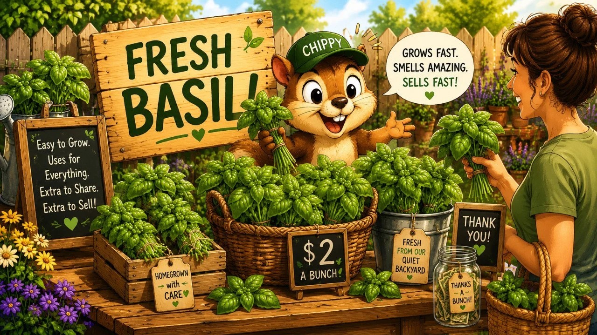

Basil: Grow Extra and Sell It Fast
Basil is one of the few herbs that checks almost every box for Quiet Backyard Living. It is easy to grow, produces fast, smells amazing, and when it gets happy, it gives way more than most people know what to do with. That is why basil is usually the first herb that creates the, “Uh oh... now I have too much basil,” problem.

Existing QBL illustrationMost herbs grow slowly. Basil doesn’t.
Basil can go from a tiny transplant to a giant leafy monster in a surprisingly short time. One healthy plant can easily give you pesto, salads, sandwiches, pizza toppings, pasta dishes, and freezer basil for months. That is a lot of value from a single pot.
Basil is one of the easiest herbs for a normal person to understand, use, and eventually end up with too much of. That makes it one of the strongest QBL herbs.
Don’t just pick leaves. Clip stems.
Most beginners make one mistake. They harvest leaves. Instead, once basil reaches about 6 to 8 inches tall, find a pair of leaves and clip just above them. The plant responds by sending out two new stems.
- one stem becomes two
- two become four
- four become eight
That is how people end up with bushy basil instead of tall, skinny basil.
Pinch flower spikes if you want the good part to last
Basil eventually tries to flower. The flowers are not bad, but once flowering begins, leaf production slows, the flavor shifts a little, and plant energy starts heading toward seed production. Most people simply pinch off flower spikes to keep basil productive longer.
Use what you want first
This page works better when it starts from real life, not hustle culture. If you grew beautiful basil, use the basil you want before you ever think about selling the extra.
- make pesto
- top pizza
- use it in pasta and tomato dishes
- add it to caprese, sandwiches, wraps, burgers, salads, and eggs
- freeze some for yourself if you want to keep the season going
Once you have already gotten your own meals, pesto, and freezer stash out of the plant, then it makes sense to look at the extra.
Know when basil is still good enough to sell
Basil is a short-clock herb. If it still looks fresh, smells amazing, and has not started turning soft or tired, you still have a good product. If it is already going limp, the better move is usually kitchen use or freezing, not trying to sell it.
What to do with too much basil
Use it fresh
Fresh basil is the easiest value to understand and the fastest thing to move, whether that means your own meals or somebody else's dinner.
Freeze it
Pesto, chopped basil with a little oil, or even frozen leaves for cooked dishes usually preserve basil better than drying does.
Bundle the real extra
If you truly have more than you want, basil is one of the easiest herbs to bunch, bag, or hand off while it still feels premium.
Fresh vs dried
Yes, you can dry basil, but it is not basil’s superpower. Compared to oregano, thyme, or rosemary, basil loses more flavor during drying. If your goal is maximum flavor, freezing usually wins.
How to package basil simply
You do not need anything fancy. Small bunches, a clean produce bag, or a simple tied bundle works fine. The main point is that it should look fresh, easy to grab, and ready to use.
- small bunches are easier to move than giant floppy ones
- keep stems tidy
- do not package bruised or tired basil
Where basil makes the most practical money
Fresh bunches are the easiest first move because people already know what basil is. But starter plants may be the best basil money-maker of all. A healthy basil plant can provide lots of cuttings, which means one strong plant can eventually become many.
The best basil money-maker
Honestly? Starter plants. Not dried basil. Not fancy products. Not complicated processing. A healthy basil transplant can often be worth far more than the tiny amount of seed required to grow it.
What basil does better than almost any herb
| Beginner Friendly | ⭐⭐⭐⭐⭐ |
| Small Space Value | ⭐⭐⭐⭐⭐ |
| Kitchen Usefulness | ⭐⭐⭐⭐⭐ |
| Fast Growth | ⭐⭐⭐⭐⭐ |
| Extra Harvest Potential | ⭐⭐⭐⭐⭐ |
| Worth Selling | ⭐⭐⭐⭐☆ |
| Worth Drying | ⭐⭐☆☆☆ |
| Overall Backyard Value | ⭐⭐⭐⭐⭐ |
Very few herbs score that well across the board.